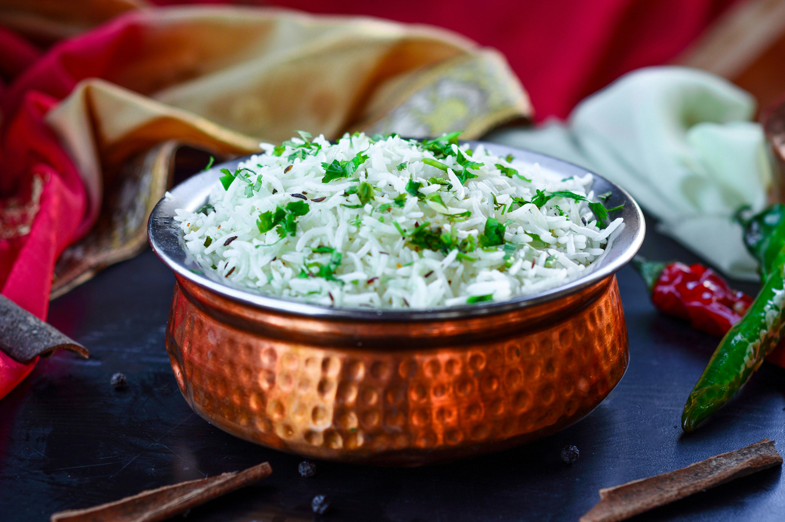

White rice Recipe

Discover the epitome of culinary simplicity with our Premium White Rice – a kitchen staple that transforms every meal into a delightful experience. Grown in the finest fields and carefully milled to perfection, our white rice boasts a fluffy texture and a subtle, delicate flavor that pairs harmoniously with a variety of dishes.
Ingredients
- 1 cup of long-grain rice
- Sea Salt
Steps
- Bring 1 1/2 cups water to a boil in a medium saucepan
- Stir in the rice and salt and return to a boil over medium-high heat
- Reduce heat to a simmer, cover, and cook until rice is tender and has absorbed all the liquid, 16 to 18 minutes (check only toward the end of cooking time). The rice should be studded with craters, or steam holes, when it is ready.
- Remove from heat and let steam, covered, for 10 minutes. Then fluff with a fork and serve.